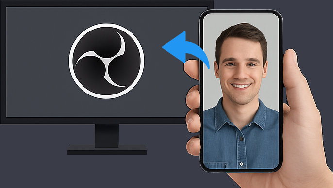

Your Stream Links
Use these links to connect your smartphone camera to OBS Studio.
Note: Your stream ID is saved in your browser until reset.

How to Bring Your Smartphone Camera into OBS Studio:
- On your smartphone: Open the Camera Link from above. (Alternatively, scan the QR code on the right with your phone's camera app). This will open VDO.Ninja in your phone's browser and begin broadcasting its camera.
- In OBS Studio (on your desktop/laptop):
- Click the '+' button under the 'Sources' panel.
- Select 'Browser' from the list.
- Give your new source a name (e.g., "Phone Camera") and click 'OK'.
- In the 'Properties' window for the new Browser source:
- Paste the OBS Link (from above) into the 'URL' field.
- Set 'Width' to 1920.
- Set 'Height' to 1080.
- Check the box labeled "Control audio via OBS".
- Optionally, adjust "Shutdown source when not visible" or "Refresh browser when scene becomes active" as needed.
- Click 'OK'. Your smartphone's camera feed should now appear as a source in OBS Studio!
Performance Tip: For the lowest latency and best quality, ensure your smartphone and computer are connected to the same Wi-Fi network (preferably a 5GHz network). If you experience issues, join our support Discord for help: https://discord.socialstream.ninja.
QR Code for Camera Link
Scan with your smartphone to quickly open the Camera Link.